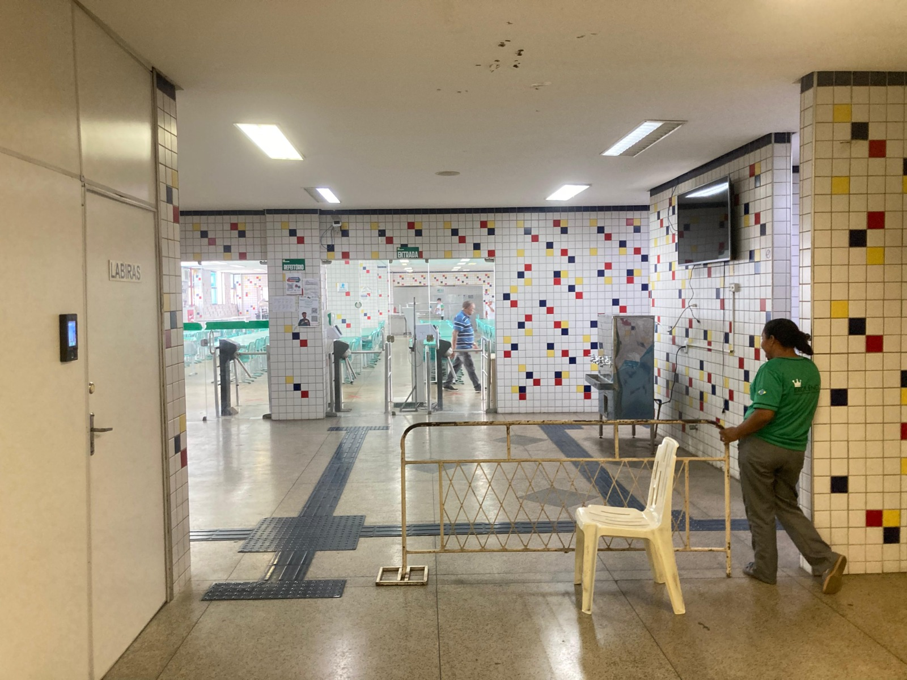

Início
Cardápio da Semana
Confira abaixo o cardápio semanal, elaborado por nutricionistas para garantir uma alimentação balanceada.
Carregando cardápio...
Horário de Funcionamento
O refeitório está aberto para atender a comunidade acadêmica nos seguintes horários:
Manhã: 8h às 12h
Tarde: 14h às 17h
De segunda a sexta-feira, durante o período letivo

Nosso espaço durante o horário de almoço